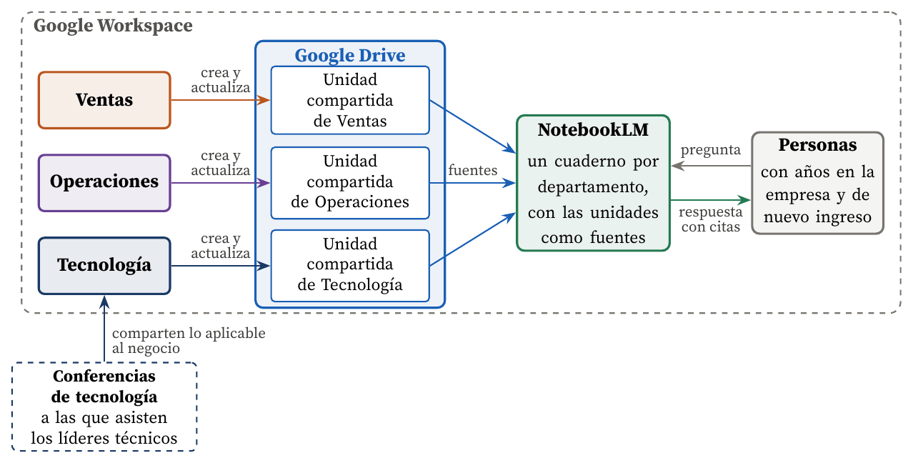

Cómo se crea, se guarda y se consulta el conocimiento con Google Drive y NotebookLM
Carlos Luis Rojas Aragonés
En mi empresa el conocimiento nuevo entra sobre todo por las personas. Se fomenta que los líderes técnicos asistan a conferencias de tecnología y, a su regreso, compartan con el resto del equipo lo que se puede aplicar al negocio. No se trata de repetir la conferencia, sino de filtrarla: quien asistió decide qué ideas son relevantes para nosotros y las traduce a nuestro contexto.
Este paso es la conversión de conocimiento tácito en explícito que Nonaka y Takeuchi (1995) llaman externalización: lo que el líder aprendió escuchando y conversando se convierte en una presentación o un documento que otros pueden leer. Sin ese paso, el conocimiento se queda en la cabeza de quien viajó y se pierde cuando esa persona cambia de puesto.
Sí contamos con un sistema, y es deliberadamente sencillo. Cada departamento (Ventas, Operaciones y Tecnología) crea y mantiene actualizada su propia documentación en Google Drive. Sobre esos documentos usamos NotebookLM, la herramienta de Google Workspace que responde preguntas apoyándose únicamente en las fuentes que se le entregan y cita el fragmento de donde sale cada respuesta (Google, 2026). La Figura 1 muestra cómo se relacionan las piezas.

Figura 1. El ecosistema de gestión del conocimiento dentro de Google Workspace. Cada departamento es dueño de su unidad compartida en Google Drive; NotebookLM usa esos documentos como fuentes y responde a cualquier persona de la empresa citando el documento de origen. Las conferencias alimentan el sistema desde fuera, a través de los líderes técnicos.
Creo que sí, por tres razones:
La condición para que funcione es la disciplina de actualización. NotebookLM responde con lo que hay en Drive, de modo que un documento desactualizado produce una respuesta desactualizada, eso sí, bien citada. Como advierten Davenport y Prusak (1998), un repositorio de conocimiento sólo aporta valor mientras la organización cultive el hábito de alimentarlo; la herramienta facilita el acceso, pero no sustituye ese hábito.
Davenport, T. H. y Prusak, L. (1998). Working knowledge: How organizations manage what they know. Harvard Business School Press.
Google. (2026). NotebookLM. https://notebooklm.google/
Nonaka, I. y Takeuchi, H. (1995). The knowledge-creating company: How Japanese companies create the dynamics of innovation. Oxford University Press.